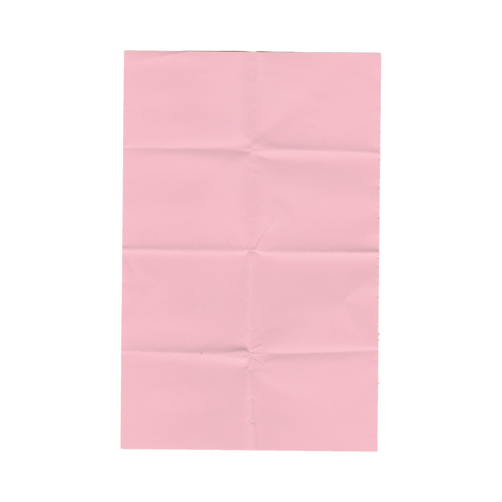
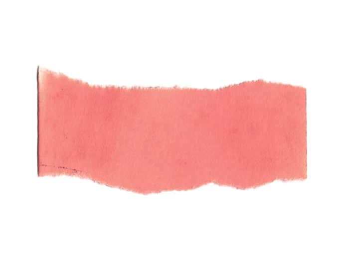

what is your relationship with art?
rw:
I feel like art is very Intrinsic to who I am.
for as long as I can remember, I’ve been a super creative person. Um, My mom has like drawings and paintings from when I was like two or three, like that she's kept. And I really can't remember a time where I wasn't doing art in some way.
when I was young, um, I was obsessed with Play-Doh like, Play-Doh is my big thing.
It made me really happy. But instead of just like, you know, messing around with Play-Doh. I’d make Gourmet breakfast meals. I would like mold the colors and like very carefully layer them on top of each other.
I think art has always just been something to do.
and recently it's been kind of hard to engage with it, especially after coming to Yale because Yale makes it feel like there is a right and wrong way to art, Which is really frustrating.
for as long as I can remember, I’ve been a super creative person. Um, My mom has like drawings and paintings from when I was like two or three, like that she's kept. And I really can't remember a time where I wasn't doing art in some way.
when I was young, um, I was obsessed with Play-Doh like, Play-Doh is my big thing.
It made me really happy. But instead of just like, you know, messing around with Play-Doh. I’d make Gourmet breakfast meals. I would like mold the colors and like very carefully layer them on top of each other.
I think art has always just been something to do.
and recently it's been kind of hard to engage with it, especially after coming to Yale because Yale makes it feel like there is a right and wrong way to art, Which is really frustrating.
lr:
eah, that's very fair. like, retweet with the “art here is frustrating.” Like, it really is.
it's intimidating. So like, you know, even just like the word, like art, or telling yourself “I am an artist,” you know, like it feels as if there are qualifications that you have to meet To be an artist.
like, no, like art is like this beautiful thing that we can all do. Let's not gatekeep art.

it's intimidating. So like, you know, even just like the word, like art, or telling yourself “I am an artist,” you know, like it feels as if there are qualifications that you have to meet To be an artist.
like, no, like art is like this beautiful thing that we can all do. Let's not gatekeep art.
...so i guess my relationship to art is very, just like, i don't know, confident, like it feels
homey.
especially when i take away the pressure from myself to like, have to art in a particular way.
especially when i take away the pressure from myself to like, have to art in a particular way.